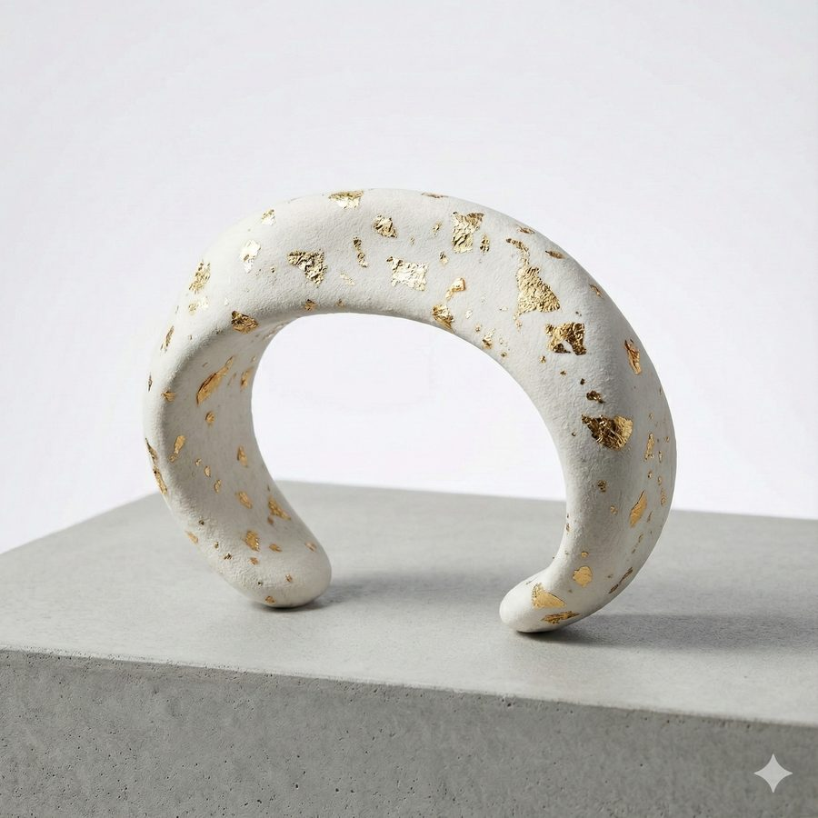
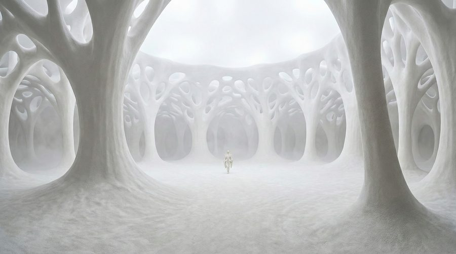
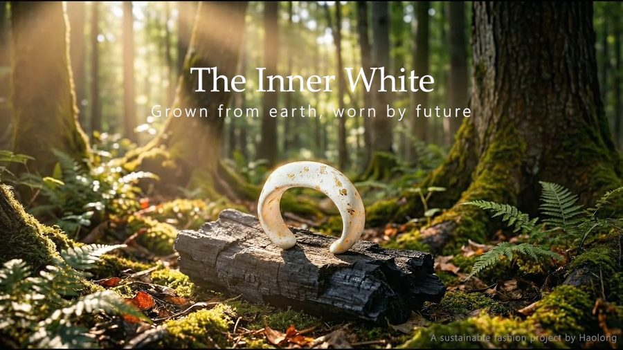

05 · Fall 2025 · Magical Forests + Sound Design
The Inner White
A sustainable fashion jewellery project. I made a wrist cuff from mycelium, the root network of fungi, shaped with 3D printing and moulding: a light, low-carbon material for jewellery that lets its wearer speak up for eco-fashion. The project joins physical craft with generative AI, and a one-minute AI campaign film launches the cuff under the line "Grown from earth, worn by future."
- Role
- Solo project: concept, material research, making the cuff, and its campaign film (art direction, AI image and video generation, editing and sound design)
- Context
- Magical Forests (the cuff) and Sound Design (the film), Parsons School of Design, Fall 2025
- Medium
- Mycelium wrist cuff, shaped with 3D printing and moulding; one-minute campaign film
- Links
- Film on YouTube
Tools: 3D printing and moulding for the cuff; Adobe Premiere Pro and Pro Tools for the film. AI help: Google Gemini generated the film's key frames and Google Veo 3.1 animated them, from my prompts. Every image on this page is from the film and AI-generated.
References: the cuff's form is inspired by Elsa Peretti's jewellery for Tiffany & Co. The soundtrack mixes clips from "Toxic" (Britney Spears), "The Chase" (Hearts2Hearts) and Rachmaninoff's Piano Concerto No. 2 (Daniil Trifonov's recording).

Jewellery grown from fungi
Magical Forests looked at soil, fungi and minerals as materials. I chose mycelium for jewellery, and my discovery diagram lists why: it is light but physically strong, grows its own organic inner structure and pattern, gives a raw, chic finish, and has a low carbon footprint in production. Its branching growth is also a natural picture of the tree structures used in data.
The cuff was shaped with 3D printing and moulding. It is worn on the wrist, where people see it: a small, visible statement for eco-fashion.


From the forest floor to the white soul
For Sound Design I made the campaign that launches the cuff: a one-minute film in the project's "Organic Futurism" look of natural textures, a white, cell-like architecture and warm gold light. It traces the cuff back to its material. It starts on a sunlit forest floor, dives through soil and roots into a glowing mycelium network, then enters the cuff's inner world, a white structure where a figure dances and floats. It ends back in the forest, with the cuff on a charred log. I generated the key frames in Gemini, animated them with Veo 3.1, cut the film in Premiere Pro and mixed the soundtrack in Pro Tools.




